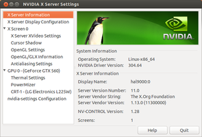
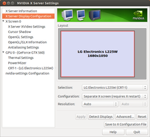
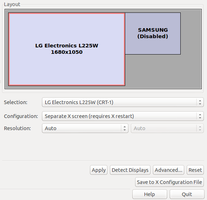
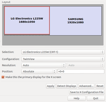
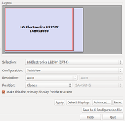
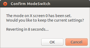
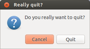

nvidia-settings
Dieser Artikel wurde für die folgenden Ubuntu-Versionen getestet:
Ubuntu 16.04 Xenial Xerus
Ubuntu 14.04 Trusty Tahr
Zum Verständnis dieses Artikels sind folgende Seiten hilfreich:
Mit dem Programm können u.a. folgende Einstellungen für eine Nvidia-Grafikkarte vorgenommen werden:
die Auflösung des Bildschirms
die Bildwiederholfrequenz des Bildschirms
weitere Bildschirme oder Projektoren
Position der Bildschirme zueinander
Rotation des Bildschirmes
Spiegelung der Bildschirme (seit Treiberversion 310.14)
Farbkorrektur (Kontrast, Helligkeit, Gamma)
OpenGL Einstellungen wie "Sync to Vblank", Bildqualität
Kantenglättung und anisotropisches Filtern
Hinweis:
Durch die seit Nvidia-Treiber 304.x gegebene Randr-1.3-Unterstützung sind grundlegende Einstellungen der angeschlossenen Monitore wie Auflösung, relative Position, Ausrichtung auch mit den systemeigenen Konfigurationswerkzeugen (Systemeinstellungen) möglich, wobei diese Einstellungen im jeweiligen Benutzerkonto gespeichert werden und Priorität gegenüber den entsprechenden Einstellungen in nvidia-settings haben. Dadurch lassen sich unterschiedliche Einstellungen auch für die Bildschirmauflösung für verschiedene Benutzerkonten realisieren, was mit nvidia-settings nicht möglich ist, da Einstellungen für die Auflösung systemweit in der xorg.conf gespeichert werden.
Installation¶
Möchte man die erweiterten graphischen Möglichkeiten seiner Nvidia-Grafikkarte nutzen, müssen zuerst die proprietären Treiber installiert werden. Dabei wird normalerweise auch das grafische Hilfsprogramm nvidia-settings mitinstalliert. Sollte es fehlen, so kann man das Paket nachinstallieren [1]:
nvidia-settings
 mit apturl
mit apturl
Paketliste zum Kopieren:
sudo apt-get install nvidia-settings
sudo aptitude install nvidia-settings
Programmaufruf¶
Hinweis:
Möchte man dauerhafte Einstellungen vornehmen, müssen Änderungen durch "Save to X-configuration file" festgeschrieben werden, dabei legt das Programm automatisch eine Sicherung der bestehenden /etc/X11/xorg.conf an. Unter Unity ist es nötig, das Programm mit root-Rechten aufzurufen, damit Änderungen in die xorg.conf geschrieben werden können. Änderung der Farbeinstellungen und der Bildqualität werden nicht in die xorg.conf geschrieben, sondern für jeden Benutzer separat durch "Save Current Configuration" im home-Verzeichnis des jeweiligen Benutzers in der Datei .nvidia-settings.rc festgelegt.
Achtung!
Bei Benutzung von Hybridgrafik mit Bumblebee können diese Befehle so nicht eingesetzt werden. Damit wird sich im zugehörigen Artikel beschäftigt.
Der Aufruf des Programms erfolgt
unter Unity durch Eingabe von nvidia-settings in die Dash.
unter GNOME unter "System -> Systemverwaltung -> NVIDIA X-Server Settings"
unter KDE unter "K-Menü -> Programme -> System -> NVIDIA X-Server Settings"
in einem Terminalfenster durch [3]:
nvidia-settings
Unmittelbar nach dem Aufruf werden Informationen zu der installierten Version, dem Betriebssystem und dem X-Server angezeigt.
Der Befehl:
nvidia-settings -l
lädt ohne Aufruf der grafischen Oberfläche (GUI) die aktuelle Konfiguration.
Hauptmonitor¶
|  |
| Basisinformationen |
|  |
| Standardbildschirm |
Die links mit kleinem Dreieck markierten Einträge "X Screen 0" stellen den Monitor, "GPU 0" die Grafikkarte dar. Einstellungen werden mit dem Punkt "X-Server Display Configuration" vorgenommen.
Die Karteikarte "Display" zeigt:
das Modell
die Konfiguration mit den Optionen "Disabled" = deaktiviert, "Separate X Screen" = eigenständiger Monitor und "TwinView" = mehr als ein Monitor
die Auflösung mit der Standardeinstellung "Auto", hinter der nach Anklicken die unterstützten Auflösungen angezeigt werden. Wählt man einen Eintrag aus, eröffnet sich die Möglichkeit, im unter "Auto" abgeschatteten Feld rechts angrenzend die gewünschte Bildwiederhohlfrequenz einzustellen.
Mit der Karteikarte "X-Screen" kann die Farbtiefe eingestellt werden.
Änderungen werden erst sichtbar, wenn man auf "Apply" klickt UND dann mit "OK" bestätigt. Andernfalls wird der ursprüngliche Zustand wieder automatisch hergestellt. Änderungen können mit "Save to X Configuration File" gespeichert werden.
Zusätzliche Monitore¶
Wird ein externer/zweiter Monitor angeschlossen, so erkennt nvidia-settings diesen und bietet dessen Konfiguration an.
|  |
| erkannter externer Monitor, disabled |
|  |
| erkannter externer Monitor |
|  |
| geclonter externer Monitor |
Nach Klick auf den entsprechenden Monitor wählt man rechts neben "Configuration" den Modus:
"disabled" = deaktiviert
"separate" = unabhängiger Monitor, verschiedene Auflösungen und Farbtiefen sind möglich
"twin" = im Verbund betriebene Monitore, die voneinander abhängig oder auch geklont sind.
Nach Auswahl von "separate" können die Einstellungen nach Bedarf gewählt werden. Dieser Modus erfordert einen Neustart des XServers.
Hinweis:
Der Modus "separate" sollte nicht mehr verwendet werden, da er veraltet ist und nicht mehr unterstützt wird.
Nach Auswahl von "twin" kann man jeweils die Auflösung einstellen und das Verhältnis der beiden Monitore zueinander festlegen:
absolute (nur für den ersten Monitor)
rechts oder links des Hauptmonitors
oberhalb oder unterhalb des Hauptmonitors
Bei diesen Modi können im Gegensatz zu "separate" Fenster vom einen Monitor in den nächsten verschoben werden.
Der Modus "clone" ist für Präsentationen, insbesondere mit dem Projektor interessant. Die Auflösung stellt man zweckmäßig für beide Bildschirme gleich ein, andernfalls werden rechts und/oder unten Teile des Bildes beim kleineren Monitor abgeschnitten. Auf welchem Monitor dies geschieht, kann durch Festlegen des Hauptmonitors "make primary display" beeinflusst werden. Unter "Configure" wählt man "TwinView" und anschließend unter "Position" einfach "Clones".
Einstellungen anwenden¶
Mit Klick auf "Apply" wird die gewählte Konfiguration probeweise angewandt. Wenn man nicht ausdrücklich bestätigt, wird sie automatisch wieder zurückgesetzt.
|  |
| Abfrage Probelauf |
|  |
| Abfrage beenden |
Ist man zufrieden, können die Einstellung durch "Save to X-configuration file" gespeichert werden. Anschließend wird das Programm geschlossen.
Problemlösungen¶
Auflösung in nvidia-settings wird nach Neustart der grafischen Oberfläche nicht übernommen¶
Für dieses Problem gibt es mehrere Ursachen mit verschiedenen Lösungsmöglichkeiten.
Vorhandene monitors.xml¶
nvidia-settings speichert die Bildschirmauflösung in der Datei /etc/X11/xorg.conf. Hat man vormals das systemeigene Programm zur Konfiguration der Bildschirme in Ubuntu verwendet, wird diese im Home Verzeichnis des jeweiligen Benutzers in der Datei ~/.config/monitors.xml ( Xubuntu verwendet ~/.config/xfce4/xfconf/xfce-perchannel-xml/displays.xml) gespeichert. Beim Einloggen werden dann die nvidia-settings-Einstellungen in der xorg.conf durch diese Datei quasi überschrieben, weswegen eine bestehende monitors.xml gelöscht und auf den parallelen Einsatz des systemeigenen Konfigurationsprogramms verzichtet werden sollte.
nvidia-settings wird nicht gestartet¶
nvidia-settings muss bei jedem Start aufgerufen werden, damit die eingestellten Änderungen wirksam werden. Die folgenden Befehle sollten dazu entweder in die Autostart oder z.B. in die .xinitrc Datei eingefügt werden:
nvidia-settings -l
oder
nvidia-settings --load-config-only
Die Manpage der installierten nvidia-settings listet weitere Optionen und lässt sich mittels
zcat /usr/share/man/man1/nvidia-settings.1.gz | groff -man | ps2pdf - nvidia-settings.pdf
in ein PDF verwandeln 
Einstellungen löschen, ändern oder vergleichen¶
Die Einstellungen zur Bildqualität sind benutzerspezifisch und werden in der versteckten Datei ~/.nvidia-settings-rc als Klartext abgespeichert. Man kann die Datei ohne sudo-Rechte umbenennen, damit die Einstellungen nicht mehr wirksam sind, falls eine Änderung Probleme bereitet, die man nicht mehr anders rückgängig machen kann:
mv ~/.nvidia-settings-rc ~/.nvidia-settings-rc.backup
Auch sind manuelle Änderungen in der Datei mit einem beliebigen Editor[4] jederzeit möglich.
Temperatur als Terminalabfrage¶
Um die aktuelle Betriebstemperatur des Grafikprozessors im Terminal [2] zu ermitteln, sofern man sich auf einer grafischen Oberfläche befindet, reicht
nvidia-settings -q gpucoretemp -t
Sofern kein X-Server zur Verfügung steht, ist dies mit
nvidia-smi -q -d TEMPERATURE | grep Gpu | cut -c35-36
möglich.
So ist diese Zahlenwertausgabe z.B. in Conky auch leicht zu integrieren. Für Kubuntu gibt es vorgefertigte Plasma-Miniprogramme für die Arbeitsfläche.
Unscharfes Bild mit Kwin und Desktop-Effekten¶
Siehe Kwin: Problembehebung.
 Übersichtsseite
Übersichtsseite- Erstellt mit Inyoka
-
 2004 – 2017 ubuntuusers.de • Einige Rechte vorbehalten
2004 – 2017 ubuntuusers.de • Einige Rechte vorbehalten
Lizenz • Kontakt • Datenschutz • Impressum • Serverstatus -
Serverhousing gespendet von